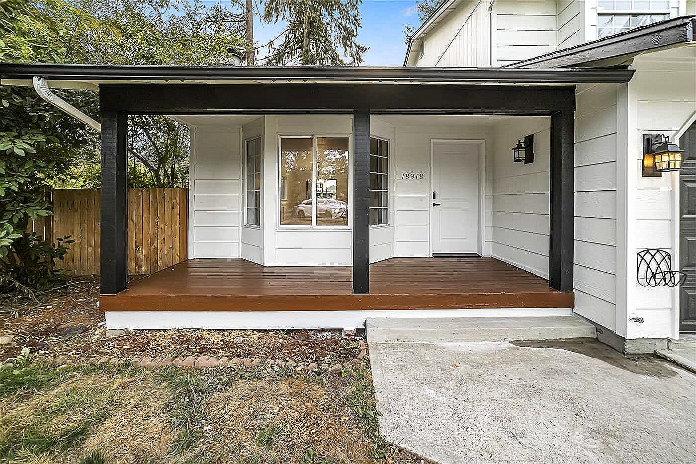

Why siding replacement matters here
In the Puget Sound area, siding is more than curb appeal. It protects the wall assembly from wet seasons, wind-driven rain, and repeated drying cycles. A good project looks sharp and improves the details behind the finish.
What should be included
A clear scope should explain the siding material, tear-off, disposal, house wrap, flashing, trim, caulking strategy, repair process, paint coordination, and cleanup. If those items are vague, the estimate is harder to compare.
Material decisions
Fiber cement, cedar, engineered wood, vinyl, and metal can all have a place depending on budget, architecture, and maintenance expectations. The right product should match the home and the details needed to protect it.
A strong siding project is a system: product, flashing, wrap, trim, and installation all matter.